社会科学における因果推論
7/ 回帰不連続デザイン
宋 財泫
関西大学総合情報学部
回帰不連続デザイン
回帰不連続デザイン
Regression Discontinuity Design
- Thistlewaite and Campbell (1960) で紹介
- 「RDD」と呼ばれる場合が多い
- 「かいきふれんぞくでざいん」は長すぎる
- ある点 (閾値)を超えることで処置を受けるか否かが決まる
- 例) 人口によって選挙制度が決まる場合 (0 = 多数代表制; 1 = 比例代表制)
\[T_i = \begin{cases} 0 & \text{ if } \text{Population} < 3500, \\ 1 & \text{ if } \text{Population} \geq 3500. \end{cases}\]
RDDの考え方
比例代表制と多数代表制の投票率の比較
- 選挙制度は国レベルで異なるため国家間比較になる
- 国固有の文脈により単純比較は困難
- フランスの場合、同一国家、レベルの選挙内で制度が異なる
- 国固有の政治的文脈はコントロールされる
- しかし、人口が多いところは都市部が多いし、投票率の低い都市部の特徴により、比例代表制の投票率は過小評価される可能性
- 「都市化度」という交絡要因が残存している
- 人口が3450人と村と3550人の村なら「都市化度」はほぼ同じなのでは …?
- ほぼ同条件で選挙制度だけが異なる状況
- \(\rightarrow\) 交絡要因が除去されているため、因果推論が可能に
RDDの考え方
比例代表制と多数代表制の投票率の比較 (架空データ)
- 人口が多くなるにつれ、投票率が減少傾向
RDDの考え方
比例代表制と多数代表制の投票率の比較
- 比例代表制は投票率を低下する制度だと解釈されてしまう
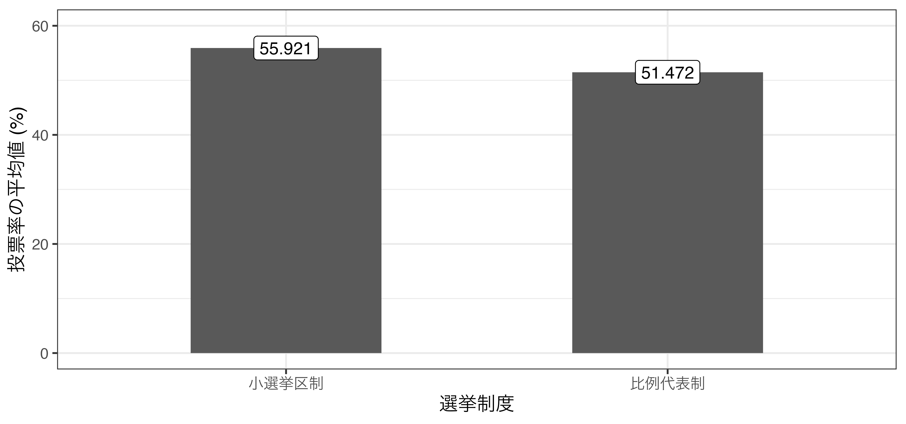
RDDの考え方
比例代表制と多数代表制の投票率の比較 (架空データ)
- 人口3500で分けてみると…

RDDの考え方
比例代表制と多数代表制の投票率の比較 (架空データ)
- 人口3500で分けてみると…
| (1) | (2) | |
|---|---|---|
| 切片 | 59.650 | 59.939 |
| (0.478) | (0.453) | |
| 人口 | -0.001 | -0.002 |
| (0.000) | (0.000) | |
| 人口3500以上ダミー | 6.561 | |
| (0.831) | ||
| Num.Obs. | 500 | 500 |
| R2 | 0.338 | 0.411 |
| R2 Adj. | 0.336 | 0.409 |
| RMSE | 5.27 | 4.97 |
2つのRDD
異なる割当メカニズムを想定した2つのRDD
- 本講義で解説するのはSRDのみ
- Sharp Regression Discontinuity (SRD)
- 強制変数 (running variable) が閾値 (cut point) を超えると必ず処置を受ける。
- もっとも単純明快な RDD。実際、多く使われている。
- 例) 人口と選挙制度
- Fuzzy Regression Discontinuity (FRD)
- 強制変数が閾値を超えると、処置を受ける確率が高まる。
- 操作変数法の理解が必要 (実例もあまり見ないような . . . )
- 例) 入試 (一定点数を超えると合格する可能性がある)
割当メカニズムの比較
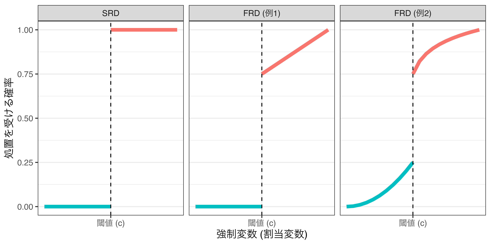
RDDの仮定
Moscoe and Barninnghausen (2015)
- 閾値周辺において交絡要因が変化しないこと
- 飲酒年齢の事故の例: 20歳になった瞬間、アルコールを分解する酵素が劇的に増加するような悲しい現象は起きない
- 閾値のルールが明確であり、既知であること
- SRDの場合、閾値は制度に起因するものが多いため、問題になるケースは少ない
- 強制変数が閾値周辺において連続であること
- 閾値周辺において強制変数の操作が行われていない
- 密度検定 (density test)で検定可能
- 潜在的結果が閾値周辺において連続であること
RDDによる因果効果の推定
パラメトリック推定方法
(非) 線形回帰分析による推定
- フランス地方議会選挙の例
\[\widehat{\mbox{Turnout}} = \beta_0 + \beta_1 \mbox{Population} + \rho \mathbf{I}(\mbox{Population} \geq 3500)\]
- 推定されるパラメータは \(\beta_0, \beta_1, \rho\) (+ 誤差項 ( \(\varepsilon\) )の分散)
- \(\mathbf{I}(\cdot)\) は指示関数 (indicator function)
- カッコ内の条件が満たされたら1、それ以外の場合は0を返す関数
- \(1(\cdot)\) と表現する場合もあり
- 要は、処置変数 (=ダミー変数) を投入し、強制変数を統制した線形回帰モデル
パラメトリック推定の例
\[\widehat{\mbox{Turnout}} = \beta_0 + \beta_1 \mbox{Population} + \rho \mathbf{I}(\mbox{Population} \geq 3500)\]
- \(\rho\) = 制度が投票率に与える効果 (因果効果)
非線形の場合
- 強制変数の二乗、三乗、… を投入
- どこまで多項式にするかはモデル比較などを通じて分析者が決める
- （自由度調整済み）\(R^2\)、\(F\)統計量、AIC、BIC、WAIC、LOOなど
- モデルにおけるバイアス—分散のトレードオフ関係
- High-order: バイアス \(\downarrow\) & 分散 \(\uparrow\)
- High-orderは直感に反する推定値が得られる場合も（Gelman and Imbens 2019）
- noisy estimates
- sensitivity to the degree of the polynomial
- poor coverage of confidence intervals
- 以降の例は
rdd_poly.csvを使用した例
\[ \begin{align} Y & = 0.2 X + 8 X^2 + 0.1 X^3 - 0.08 X^4 + 50 \mathbf{I}(X > 0) + \varepsilon \\ \varepsilon & \sim \mbox{Normal}(0, 20). \end{align} \]
非線形回帰の例
\[\hat{Y} = \beta_0 + \rho \mathbf{I}(X > 0) + \beta_1 \mbox{X}\]
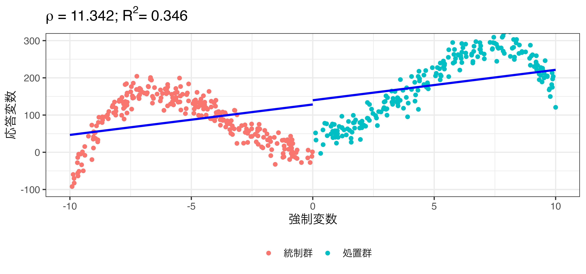
非線形回帰の例
\[\hat{Y} = \beta_0 + \rho \mathbf{I}(X > 0) + \beta_1 X + \beta_2 X^2\]
非線形回帰の例
\[\hat{Y} = \beta_0 + \rho \mathbf{I}(X > 0) + \beta_1 X + \beta_2 X^2 + \beta_3 X^3\]

非線形回帰の例
\[\hat{Y} = \beta_0 + \rho \mathbf{I}(X > 0) + \beta_1 X + \beta_2 X^2 + \beta_3 X^3 + \beta_4 X^4\]
非線形回帰の例
\[\hat{Y} = \beta_0 + \rho \mathbf{I}(X > 0) + \beta_1 X + \beta_2 X^2 + \dots + \beta_5 X^5\]
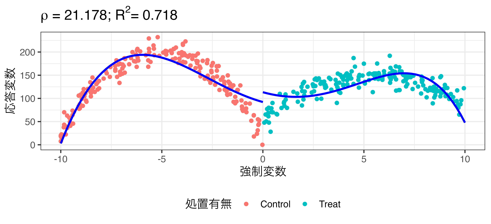
非線形回帰の例
\[\hat{Y} = \beta_0 + \rho \mathbf{I}(X > 0) + \beta_1 X + \beta_2 X^2 + \dots + \beta_6 X^6\]
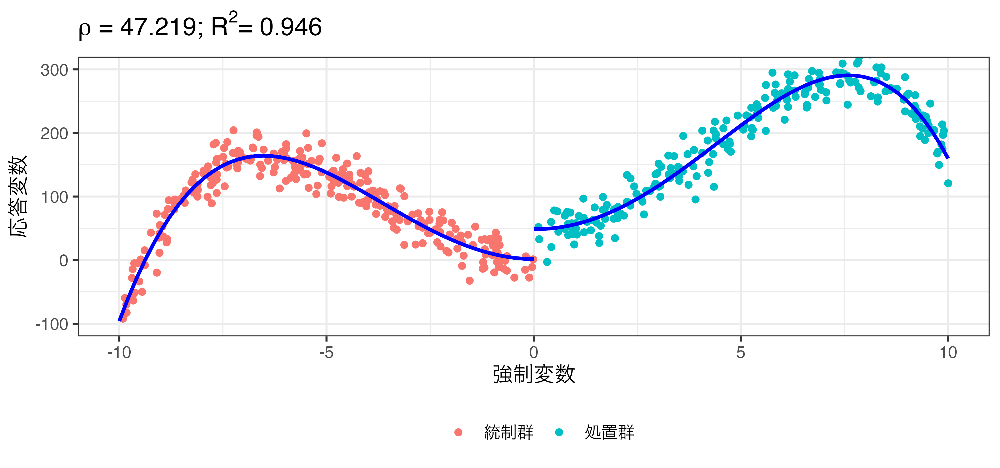
非線形回帰の例
\[\hat{Y} = \beta_0 + \rho \mathbf{I}(X > 0) + \beta_1 X + \beta_2 X^2 + \dots + \beta_7 X^7\]
非線形回帰の例
\[\hat{Y} = \beta_0 + \rho \mathbf{I}(X > 0) + \beta_1 X + \beta_2 X^2 + \dots + \beta_8 X^8\]
非線形回帰の例
\[\hat{Y} = \beta_0 + \rho \mathbf{I}(X > 0) + \beta_1 X + \beta_2 X^2 + \dots + \beta_9 X^9\]

非線形回帰の例
\[\hat{Y} = \beta_0 + \rho \mathbf{I}(X > 0) + \beta_1 X + \beta_2 X^2 + \dots + \beta_{10} X^{10}\]
推定値の変化
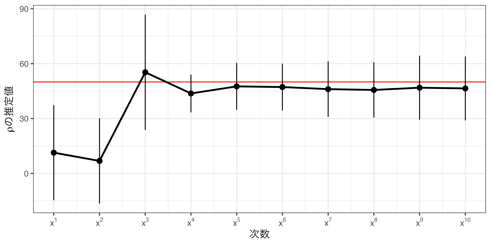
調整済み決定係数の変化
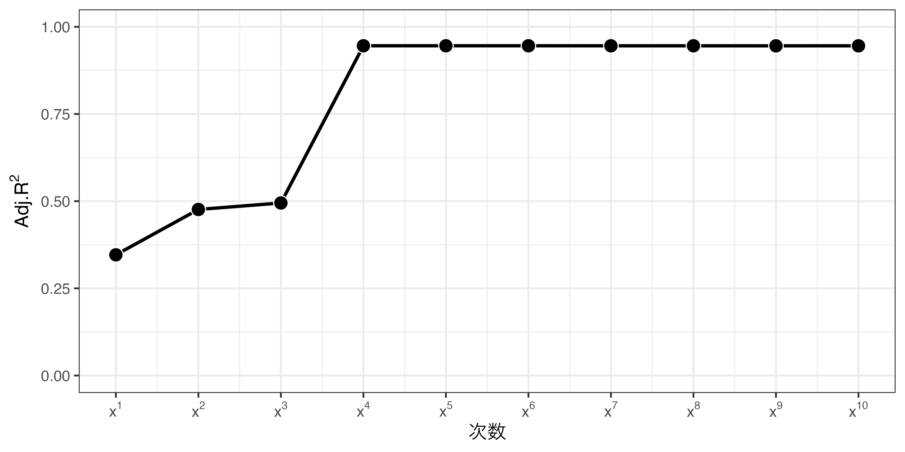
閾値周辺で傾きが変化する場合
- 単純に\(\mathbf{I}(X > c)\)のみを回帰式に投入することは連続した回帰直線において切片のみが変化するという前提
- 回帰直線が連続し、切片のみ変化 (jump) しているため、バイアスが生じうる
- \(\rightarrow\) 交差項を投入することで解決
\[\hat{Y} = \beta_0 + \beta_1 X + \rho \mathbf{I}(X \geq 3) + \gamma X \cdot \mathbf{I}(X \geq 3).\]
- \(\beta_0 = 3, \beta_1 = 1, \rho = 1.5, \gamma = 2\) の場合
- 因果効果は \(X = 3\) の場合に生じるため、 \(1.5 \cdot \mathbf{I}(X \geq 3) + 2 \cdot 3 \cdot \mathbf{I}(X \geq 3) = 7.5 \cdot \mathbf{I}(X \geq 3)\)
- \(\rightarrow\) 因果効果は 7.5
交互作用の例 (rdd_interaction.csv)
- 交差項なしの処置効果: 11.730
- 交差項ありの処置効果: 7.173
| 交差項なし | 交差項あり | |
|---|---|---|
| \(\beta_0\) | 3.981 | 3.028 |
| (0.701) | (0.665) | |
| \(\beta_1\) | 1.273 | 1.029 |
| (0.123) | (0.121) | |
| \(\rho\) | 11.730 | 0.699 |
| (1.519) | (2.305) | |
| \(\gamma\) | 2.158 | |
| (0.358) | ||
| Num.Obs. | 200 | 200 |
| R2 Adj. | 0.824 | 0.851 |
| F | 467.822 | 379.750 |
| RMSE | 5.76 | 5.29 |
交互作用の例 (rdd_interaction.csv)
- 交差項なしの処置効果: 11.730
- 交差項ありの処置効果: 7.173
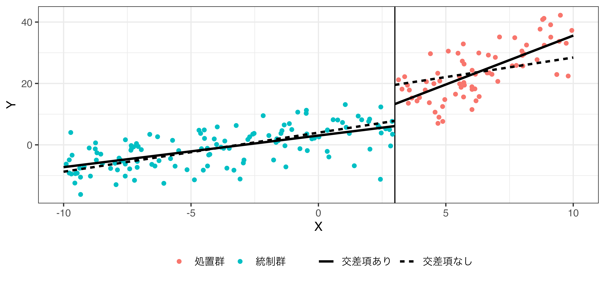
解釈をより分かりやすくするためには
強制変数を閾値で中心化 (centering) する
\[\hat{Y} = \beta_0 + \beta_1 X + \rho \mathbf{I}(X \geq 3) + \gamma X \cdot \mathbf{I}(X \geq 3).\]
- 交差項がない場合、因果効果は \(\rho\)
- 交差項が含まれている場合、因果効果は \(\rho + \gamma \cdot c\)
- \(c\) は閾値 (cut point)
- 強制変数 (X) を \(c\) で中心化すると …
解釈をより分かりやすくするためには
強制変数を閾値で中心化 (centering) する
\[\begin{align}\hat{Y} & = \beta_0 + \beta_1 X^c + \rho \mathbf{I}(X^c \geq 0) + \gamma X \cdot \mathbf{I}(X^c \geq 0), \\ X^c & = X - c.\end{align}\]
- 閾値が0になるため、閾値での因果効果は
- \(\rho + \gamma \cdot 0 = \rho\)
- \(\rho\) を因果効果として解釈することが可能に
- 交差項が含まれていないモデルの場合、閾値で中心化してもしなくても \(\rho\) は同じ
- \(\rightarrow\) とりあえず、入れてみる
- パッケージで分析する際、中心化は気にしなくても良いが、パッケージを使う前に自分で探索的に分析をしてみよう
中心化前の \(\rho\)
\[\hat{Y} = \beta_0 + \beta_1 X + \rho \mathbf{I}(X \geq 3) + \gamma X \cdot \mathbf{I}(X \geq 3).\]
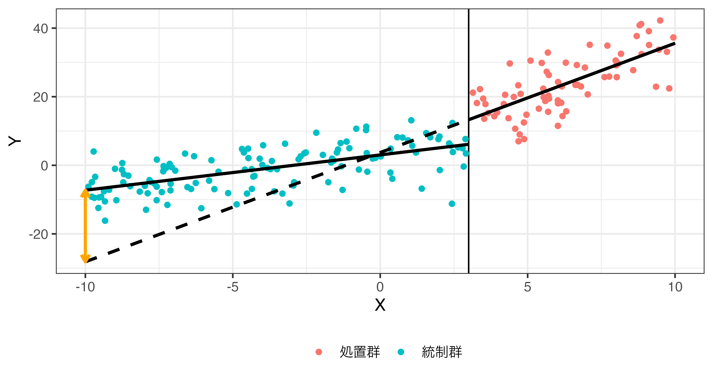
中心化後の \(\rho\)
\[\hat{Y} = \beta_0 + \beta_1 X^c + \rho \mathbf{I}(X^c \geq 0) + \gamma X \cdot \mathbf{I}(X^c \geq 0).\]
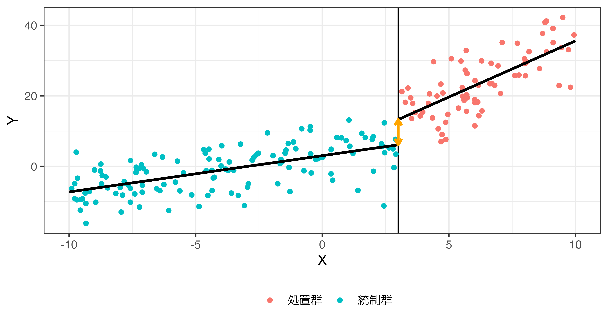
ノンパラメトリック推定法
パラメトリック推定の問題点
強制変数と応答変数間の関数 (functional form) が正しく設定できるか
- 閾値は制度などによって決まることが多いため、明確な場合が多い
- モデルが既知ならこれまでのようにパラメトリックな推定が効率的
- しかし、強制変数と応答変数間の関数は、ほとんどの場合において未知
- モデルの誤設定 (misspecification) はバイアスの原因になりうる
- 例) 多項式モデルの1〜2次項モデルの場合、因果効果が逆転
ノンパラメトリック/セミパラメトリック推定
- モデルと全く無関係ではないが、より柔軟な推定方法
- ノンパラメトリックはモデルを使用しない
- モデルの特定が多少間違っても、そこまで大きく問題にならない推定法
ノンパラメトリック推定法
閾値 ( \(c\) ) から \(h\) 以上離れているケースは分析から除外
- 分析対象は \(c - h \leq X \leq c + h\) のみ
- 閾値を中心に中心化済みなら \(−h \leq X^c \leq h\)
- \(h\) は「バンド幅 (bandwidth)」と呼ばれる
- バンド幅内のデータのみが対象となるため、局所ATE (LATE; Local ATE)が推定対象
推定方法
- ノンパラメトリック: 局所平均 (Local Average)
- \(\mathbb{E}[Y|0 \leq X^c \leq h] - \mathbb{E}[Y|-h \leq X^c < 0]\)
- セミパラメトリック: 局所回帰分析 (Local Linear Regression)
- \(−h \leq X^c \leq h\) の範囲内で交差項を含むカーネル回帰分析
- 定番のカーネル関数は三角 (triangular)
- カーネル関数が一様 (uniform, rectangular) なら線形回帰分析
ノン/セミパラメトリック推定法
\(−h \leq X^c \leq h\)範囲内のデータのみ使用（rdd_poly.csv）
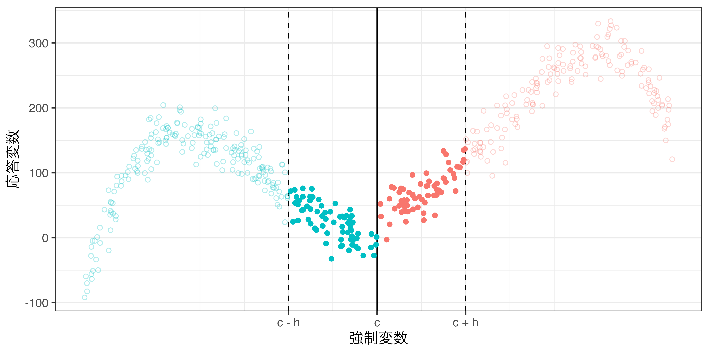
局所平均
\(h = 5\)の場合
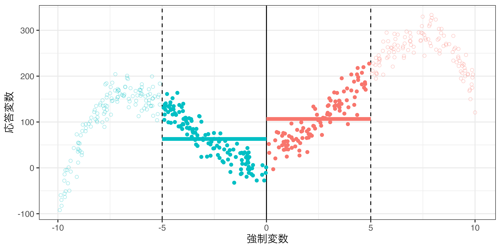
局所平均
\(h = 3\) の場合
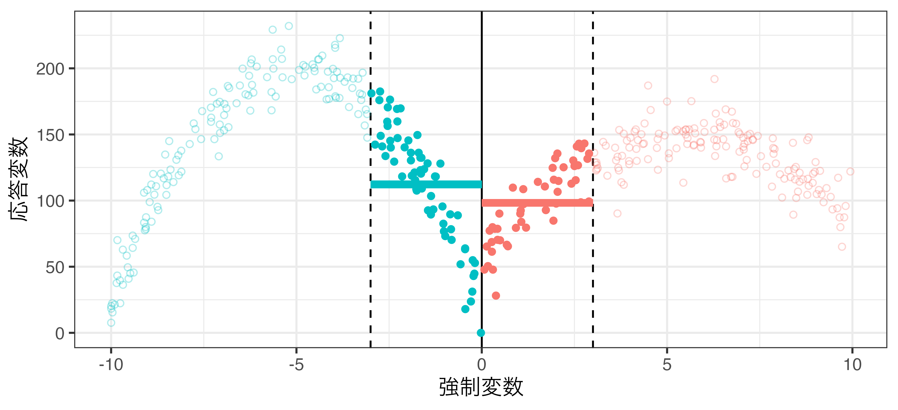
局所平均
\(h = 1\) の場合
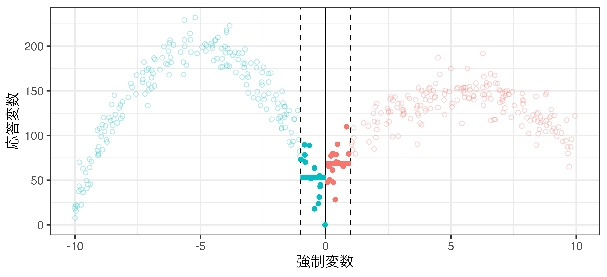
バンド幅と局所平均
バンド幅の調整による因果効果の推定値の変化

バンド幅と局所平均
参考) 選挙制度と投票率の例 (rdd_french.csv)
- 傾きが緩やかな場合、バイアス小
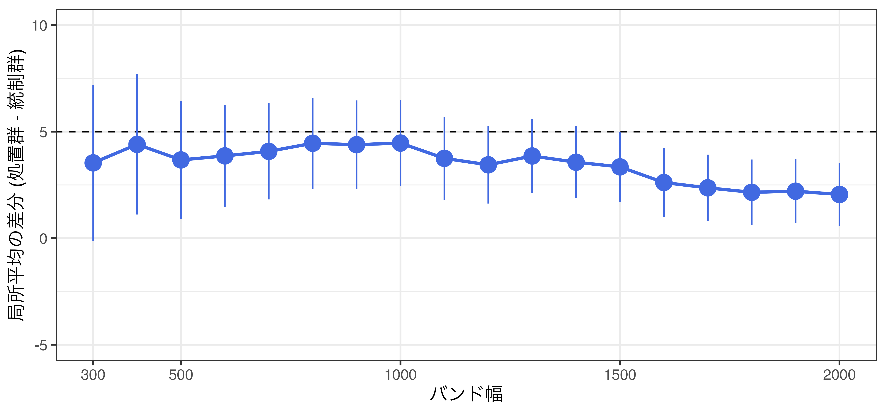
限界
パラメトリック推定に比べてバイアスが大きい場合も
- バンド幅内のデータのみが分析対象になるため、必然的にサンプル・サイズが小さくなる
- 少数のケースによって平均値の変動が大きい (モデルの分散が大きい)
- バンド幅内に十分に大きいサンプルサイズが確保されている必要
- 平均値を用いることは、バンド幅内のデータにおいて強制変数の傾きが0という非常に強い仮定を置く。
rdd_poly.csvのように\(c\)周辺で変化が大きい場合、局所平均は向いていない
より前提を緩めた推定法
- 局所回帰分析 (local regression)
局所平均 vs. 局所回帰 (rdd_data2.csv)
rdd_poly.csv：\(h = 5\)の場合
局所回帰分析
バンド幅内データを対象にした線形回帰分析 (Hahn et al. 2001, Poter 2003, Imbens and Lemieux 2008)
- パラメトリック推定と同様、交差項や多項式も投入可能
- Rの{rdd}パッケージの場合、交差項 \(\bigcirc\) & 多項式 \(\times\)
- 閾値（\(c\)）に近いほど、ケースに重みを付ける
- 重み関数はカーネル関数を用いる
- Imbens and Lemieux（2008）は一様（uniform; rectangular）カーネル関数を用いたが、この場合、重みを付けない普通の回帰分析と一致
- バンド幅内の全てのケースに同じ重みを付ける
- 三角形（triangular）カーネル関数が統計学的観点からは最適（optimal）とも（Fan and Gijbels 1996）
- ほとんどのパッケージは三角形カーネル関数がデフォルト
様々なカーネル関数

局所回帰 & 一様カーネル（\(h = 5\)）
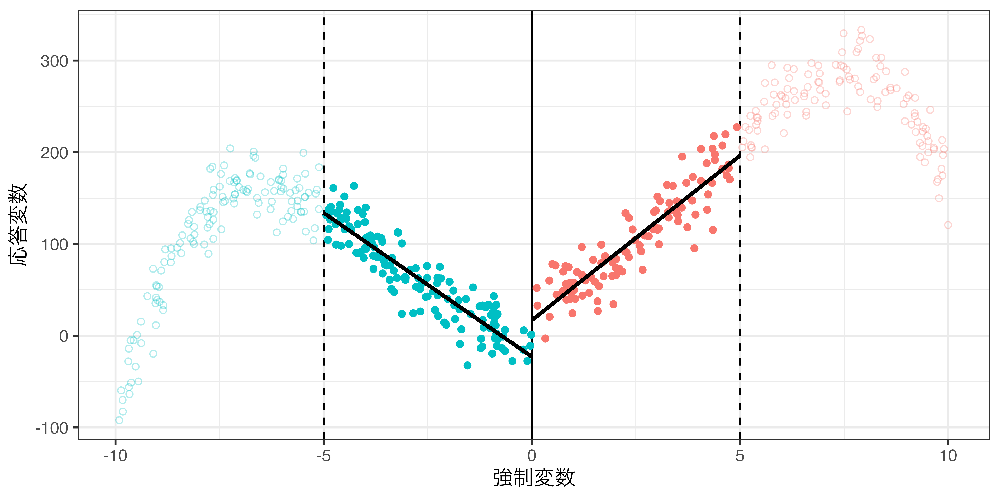
局所回帰 & 一様カーネル（\(h = 3\)）
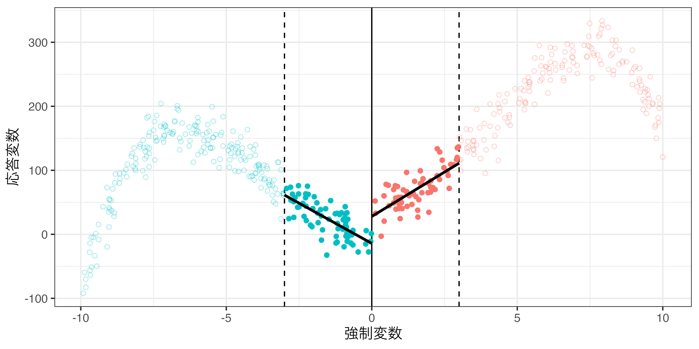
局所回帰 & 一様カーネル（\(h = 1\)）
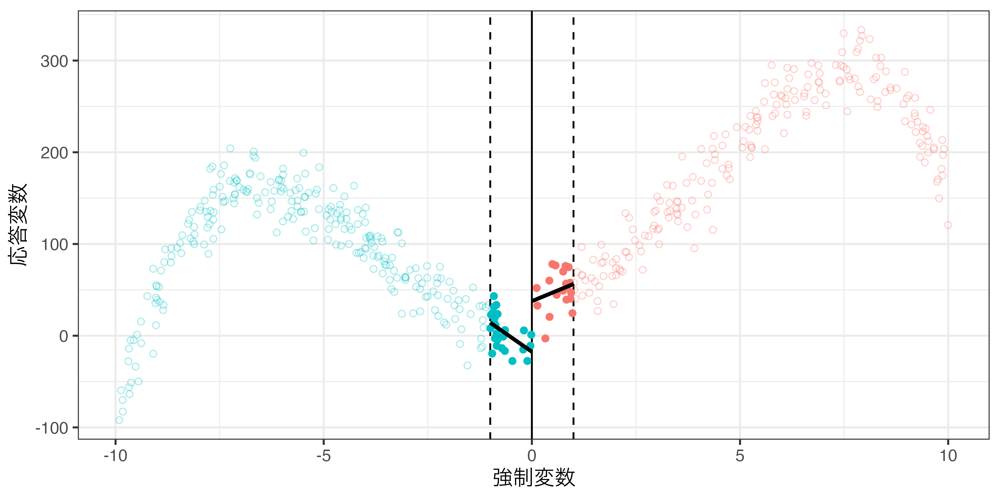
バント幅とLATE
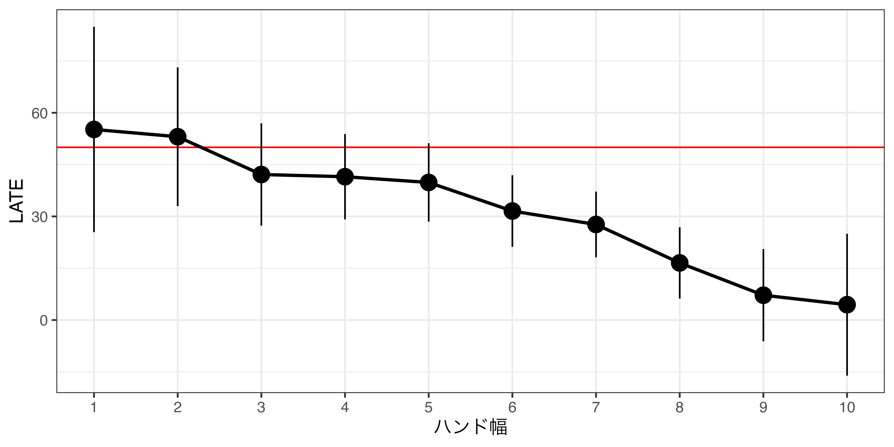
バンド幅の話
ノンパラメトリック推定の場合、バンド幅の設定が大事
- 一般的に、\(h\)が大きいほどバイアスが大きい
- データによっては逆の傾向や凹関数の形をしている場合もある
- 分散とバイアスのトレード・オフ関係
- 理想としては分散とバイアスの最小化が望ましい
- 最適バンド幅 (optimal bandwidth)
- 残念ながら、バンド幅を決めるルールは存在しない
- バンド幅を決めるのは分析者の仕事
- いろいろと \(h\) を変えながら分析を繰り返す
- 多く使われているバンド幅の決め方
- \(\Rightarrow\) Imbens-Kalyanaraman Optimal Bandwidth
IK Optimal Bandwidth
簡単に計算可能な最適バンド幅の一つ (Imbens and Kalyanaraman 2009)
- 他に CCT バンド幅 (Calonico, Cattaneo, and Titiunik 2014)、CV バンド幅 (Ludwig, and Mill 2007) など
\[h_{\text{opt}} = C_K \cdot \Bigg(\frac{2 \hat{\sigma}^2(c) / \hat{f}(c)}{\big(m_{+}^{(2)}(c) - m_{-}^{(2)}(c)\big)^2 + (\hat{r}_{+} + \hat{r}_{-})}\Bigg)^{\frac{1}{5}} \cdot N^{-\frac{1}{5}}\]

カーネルとの関係
カーネル選択は推定値に大きな影響を与えない (Lee and Lemieux 2010)
処置効果
|
||||
|---|---|---|---|---|
| カーネル | \(h_{opt}\) | LATE | Half BW | Double BW |
| triangular | 4.442 | 41.893 | 50.977 | 26.204 |
| rectangular | 6.982 | 27.665 | 36.759 | 4.446 |
| epanechnikov | 4.135 | 40.758 | 51.064 | 26.396 |
| quartic | 4.721 | 41.696 | 51.318 | 26.361 |
| triweight | 5.247 | 42.069 | 51.188 | 26.564 |
| tricube | 4.765 | 41.154 | 51.394 | 26.608 |
| gaussian | 1.626 | 42.740 | 50.612 | 28.466 |
| cosine | 4.210 | 41.067 | 51.168 | 26.385 |
実習
実習用データ
宋が作成した架空データ
| ファイル名 | 説明 | 真の因果効果 |
|---|---|---|
rdd_french.csv |
架空のフランス地方選挙 | 約5 |
rdd_poly.csv |
多項式の例 | 約50 |
rdd_intreaction.csv |
交互作用の例 | 約7.5 |
実習用データ
rdd_data.csv
実習内容
- LATEの推定
- 頑健性の確認
- 仮定の確認